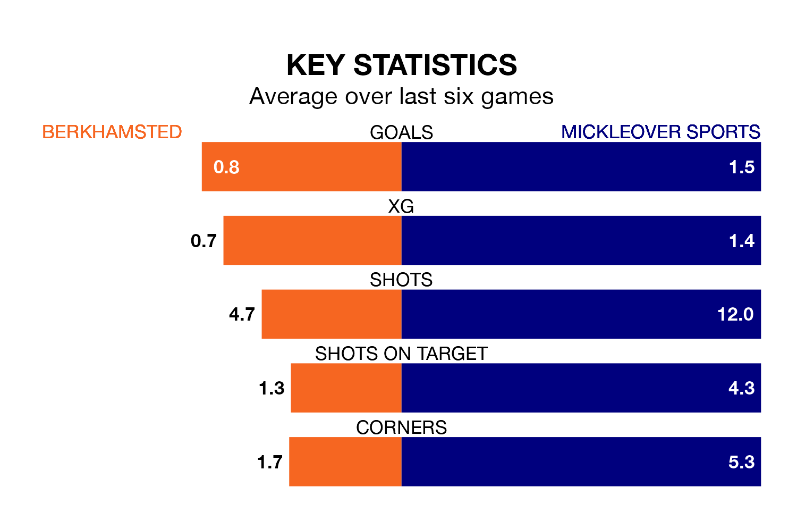

Mid-season relegation candidates Berkhamsted face a challenge against high-flying Mickleover Sports on Saturday.
Berkhamsted are 21st in the Southern League Premier Central table, and have picked up just two wins and eight draws in their 25 games to date.
Mickleover Sports, meanwhile, are second in the standings with 47 points, having won 14 and drawn five of their first 24 matches, and are level on points with table-toppers Needham Market.
With 19 goals in 25 games so far this season, Berkhamsted are the league's second-lowest scorers with 0.8 goals per game. And they are conceding more than average, letting in 57 goals at a rate of 2.3 per game.
Mickleover Sports, meanwhile, are above average scorers, with 2.2 goals per game, compared to a league average of 1.5. They have conceded 1.0 goal per game.
The home side are in bad form in Southern League Premier Central, with one win and a draw from their last six games.
With two wins and two draws over that period, the visitors' form is better – they have taken eight points from 18, compared to Berkhamsted's four.
Berkhamsted's last match was on January 6, a 2-0 loss against Leamington.
Mickleover Sports beat Stourbridge 2-1 last time out, on Tuesday.
Updated: 10:50, 10/01/24